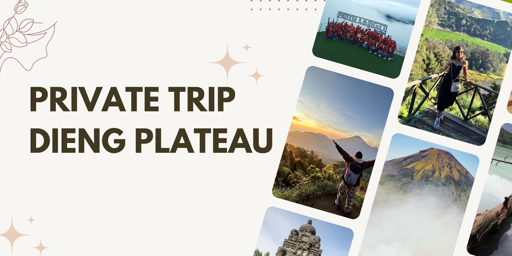

Private Trip Dieng – Eksklusif, Fleksibel, Satu Mobil Hanya untuk Kamu
Buat kamu yang cari liburan anti ribet, privasi penuh, dan pengalaman terbaik di setiap destinasi, Private Trip Dieng adalah pilihan utama. Semua perjalanan dirancang khusus, satu mobil hanya untuk kamu dan rombongan yang booking. Tidak digabung dengan tamu atau peserta lain—benar-benar privat dari awal sampai selesai. Kamu bisa bebas atur itinerary, waktu berangkat, hingga destinasi sesuai mood dan keinginan.
Penjemputan juga fleksibel: bisa dari rumah, hotel, stasiun, bandara, atau meeting point lain di kota-kota seperti Wonosobo, Jogja, Semarang, Purwokerto, Solo, dan area Jawa Tengah & DIY. Armada sudah standby, perjalanan santai, tanpa khawatir soal waktu atau harus menunggu orang lain. Setibanya di Dieng, kamu bebas menentukan agenda sendiri—mau hunting sunrise, langsung check-in penginapan, kulineran, atau explore spot hidden gem, semuanya bisa.
Tour leader lokal siap mendampingi, tapi hanya hadir saat dibutuhkan dan tidak ikut campur urusan pribadi selama trip. Semua fasilitas sudah premium: kendaraan nyaman, penginapan pilihan, makan diatur sesuai request, tiket wisata diurus, sampai dokumentasi foto kalau dibutuhkan. Itinerary bisa singkat satu hari, dua hari satu malam, sampai tiga hari dua malam atau lebih—semua benar-benar fleksibel.
Keunggulan Private Trip Dieng
- Satu Mobil Khusus: Tidak digabung siapa pun di luar peserta yang booking. Benar-benar privat untuk rombongan sendiri.
- Full Custom: Itinerary, jam keberangkatan, rute, hingga aktivitas bisa bebas diatur, bahkan berubah dadakan sesuai mood.
- Privasi Terjaga: Tour leader hadir hanya saat dibutuhkan, urusan pribadi dan quality time tetap jadi prioritas utama.
- Personal Service: Semua layanan dari tim lokal yang paham wisata, kuliner, hingga spot-spot hidden gem terbaik di Dieng.
- Nyaman & Aman: Tidak ada keramaian, tanpa peserta lain, semua agenda bebas tekanan waktu dan suasana selalu tenang.
Fasilitas Paket Private Trip Dieng
- Transportasi pribadi (mobil/vip car, driver profesional, fleksibel dan nyaman)
- Satu mobil hanya untuk kamu & rombongan yang booking, tanpa sharing dengan peserta lain
- Tour leader lokal (on demand, hanya hadir saat diminta)
- Penginapan pilihan (homestay, hotel, atau villa, bisa request kamar privat atau sharing sesuai keinginan)
- Layanan makan lengkap (custom menu, bisa request makanan khas atau diet tertentu)
- Tiket masuk semua destinasi di itinerary pilihan
- Dokumentasi foto (by request, untuk kenangan trip privat)
- Parkir, tol, retribusi wisata—all in, tanpa biaya tambahan tersembunyi
- Air mineral dan snack selama perjalanan
Rekomendasi Destinasi & Pengalaman
- Bukit Sikunir: Sunrise legendaris di atas awan, suasana pagi tenang dan damai.
- Telaga Cebong: Danau alami, cocok untuk morning walk atau sekadar foto bareng.
- Kawah Sikidang: Kawah aktif, fenomena vulkanik yang mudah diakses dan penuh edukasi.
- Komplek Candi Arjuna: Area heritage di tengah padang, suasana magis dan bersejarah.
- Batu Ratapan Angin: Bukit view dua telaga, spot foto favorit dan tempat santai sore hari.
- Dieng Plateau Theater: Bioskop mini, menonton dokumenter tentang alam dan budaya Dieng.
- Taman Pintu Langit: Taman tematik dengan banyak hidden spot untuk healing dan foto.
- Pemandian Air Panas: Relaksasi di kolam air hangat alami, pengalaman khas pegunungan.
- Kahyangan Skyline: Gardu pandang dengan lanskap pegunungan dan cityview di kejauhan.
- Dieng Park: Family park, taman bermain dan wahana outdoor.
- Air Terjun Sikarim: Air terjun alami, suasana segar dan jauh dari keramaian.
- Telaga Menjer: Danau luas, tempat piknik dan bersantai sambil foto panorama.
- Bukit Scooter: Spot chill sore hari, city light dan sunset view yang keren.
- Perkebunan Teh: Jalan santai di kebun teh, nuansa hijau dan udara segar.
- Sentra Oleh-oleh & Kuliner: Belanja oleh-oleh dan icip-icip makanan khas Wonosobo & Dieng.
Kamu bebas atur destinasi sesuai keinginan, bisa request hidden gem atau rute baru di sekitar Dieng. Mau aktivitas unik seperti private picnic, sesi foto prewedding, atau trip tematik (healing, adventure, culinary), semuanya bisa dikustom.
Panduan & Tips Private Trip Dieng
Private Trip = kamu pegang kontrol penuh, tidak terikat agenda orang lain. Pilih waktu start, rute, dan destinasi sesuai keinginan. Suhu Dieng cukup dingin, jadi bawalah jaket hangat dan outfit nyaman. Semua kebutuhan teknis di-handle oleh tim—kamu tinggal datang dan nikmati setiap momen tanpa repot. Komunikasikan semua request spesial sebelum trip, mulai dari makanan favorit, jam penjemputan, hingga permintaan aktivitas unik.
FAQ Private Trip Dieng
Bisa pilih waktu dan destinasi sendiri?
Sangat bisa, itinerary, jadwal, dan seluruh destinasi bebas diatur sesuai keinginan, bahkan diubah mendadak saat trip berlangsung.
Satu mobil benar-benar khusus, tidak digabung peserta lain?
Ya, satu mobil hanya untuk kamu dan rombongan yang booking. Tidak digabung siapa pun di luar peserta yang mendaftar, tidak ada sharing trip, dan semua agenda dibuat privat.
Penjemputan dari kota mana saja?
Bisa dijemput dari Wonosobo, Jogja, Semarang, Purwokerto, Solo, atau lokasi lain di Jawa Tengah & DIY—fleksibel sesuai permintaan.
Paket ini cocok untuk siapa?
Cocok untuk couple, keluarga, sahabat, solo traveler, atau siapa pun yang ingin liburan tanpa campur dengan grup lain.
Bisa tambah hari, upgrade fasilitas, atau request khusus?
Bisa, semua bisa dikustom: tambah hari, upgrade hotel, sesi foto profesional, atau request aktivitas unik lain.